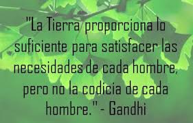
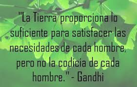

Dia de la tierra !!!
FECHA DEL DIA DE LA TIERRA
El Día de la Tierra es un día celebrado en muchos países el 22 de abril. Su promotor, el senador estadounidense Gaylord Nelson, instauró este día para crear una conciencia común a los problemas de la superpoblación, la producción de contaminación, la conservación de la biodiversidad y otras preocupaciones ambientales para proteger la Tierra.


 
